GitHub:
QR
Download
This is an unofficial QR code generator for GitHub profiles and projects. You must follow
GitHub's guidelines
to use. This page was developed by
Shuhei Ohno
and designed by
ezeroms
. Some icons are provided by
Google Fonts
. The background is based on
Bubble Float
from
Animated Backgrounds
. This project depends on
QR Code Styling
by
Denys Kozak
. More options are available
here
. SVG files do not work on PowerPoint but you can get
here
. Are you rich? You can
buy me a coffee
☕